Android on Linux-pohjainen käyttöjärjestelmä älypuhelimille ja muille mobiililaitteille. Androidia ei ole saatavilla lainkaan pöytäkoneisiin, mutta mobiililaitteissa se on erittäin suosittu, sillä yli puolet kaikista maailman mobiililaitteista toimivat Android-käyttöjärjestelmällä. Android-käyttöjärjestelmän tietoturvapäivityksiä ei tehdä vanhoihin käyttöjärjestelmäversiohin, mikä osaltaan edistää laitteiden haavoittuvuutta.
Windows on kotitietokoneiden yleisin käyttöjärjestelmä, joka kehitettiin alunperin merkkipohjaisen MS-DOSin käyttöliittymäksi. Windows-nimi viittaa ohjelmaikkunoihin: kullakin ohjelmalla on oma ikkunansa ja useita ohjelmia voi pitää avoinna yhtä aikaa. Viimeisin versio käyttöjärjestelmästä on Windows 10.
OS X on Applen kehittämä käytöjärjestelmä Macintosh-tietokoneille. iOS on puolestaan Applen kehittämä käyttöjärjestelmä iPhone-, iPod touch-, iPad- ja Apple TV -laitteille. Applen laitteet ovat suosittuja, sillä käyttöjärjestelmiä pidetään nopeina, helposti omaksuttavina ja varsin vakaina sekä hyvin suunniteltuina.
Linux pohjautuu kaupallisiin Unix-käyttöjärjestelmiin. Linux on avoimeen lähdekoodiin perustuva käyttöjärjestelmä, mikä mahdollistaa lähdekoodin lukemisen ja muokkaamisen omiin tarpeisiin sopivaksi. Niinpä ohjelmoijat ympäri maailmaa ovat kehittäneet Linuxia, ja sitä pidetäänkin maailman testatuimpana käyttöjärjestelmänä. Linuxia käytetään palvelinkoneiden ohella paljon myös kotikoneissa, koska Linuxiin on saatavilla suuri joukko ilmaisia ohjelmia.